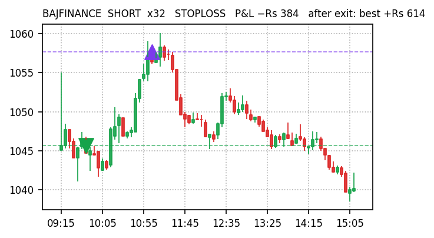
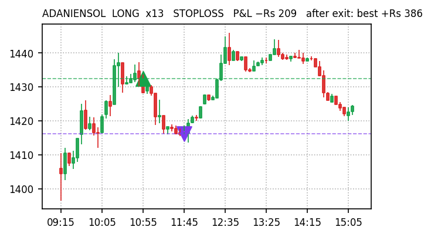
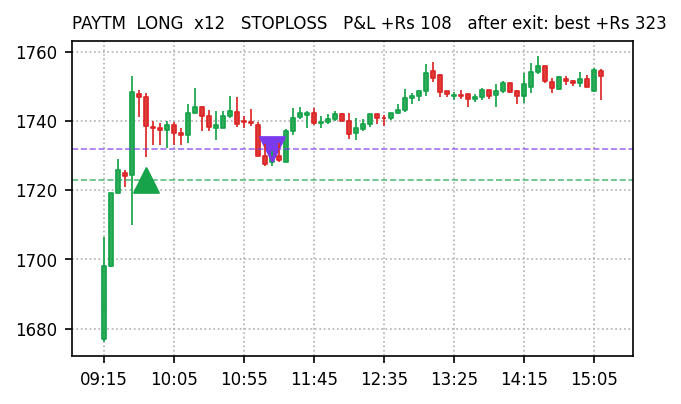
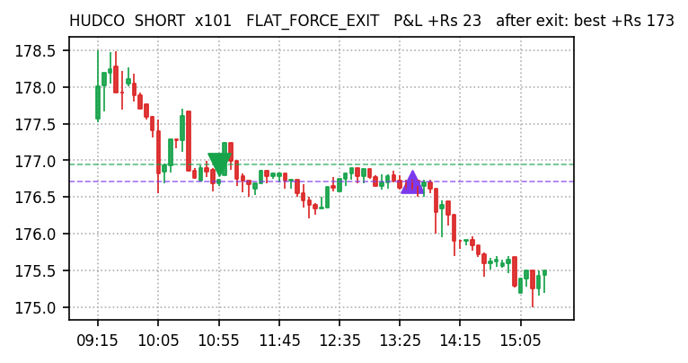
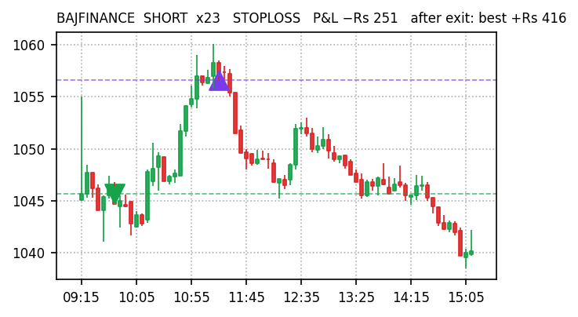
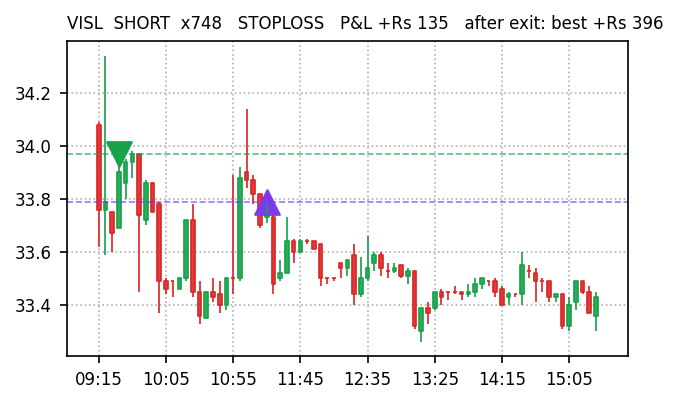
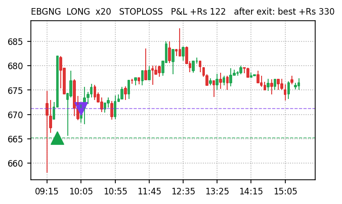
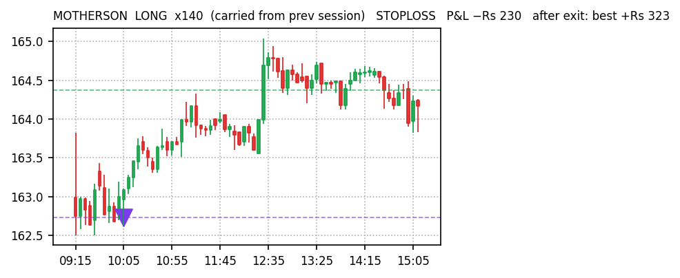

| Gross P&L | +Rs 381 |
| Net of costs | −Rs 472 (costs Rs 853) |
| Trades | 56 L 21 / S 35 |
| Win rate | 59% (33W / 23L) |
| Exit reason | # | P&L |
|---|---|---|
| STOPLOSS | 16 | −Rs 1,149 |
| FLAT_FORCE_EXIT | 18 | +Rs 56 |
| SIGNAL_FLIP | 7 | +Rs 66 |
| TARGET | 1 | +Rs 184 |
| TIME_EXIT | 14 | +Rs 1,224 |
| Held everything to 15:15 instead of exiting | +Rs 272 |
| Stop-losses that later reversed our way (9) | +Rs 1,292 |
| Perfect-exit ceiling after our exits (upper bound) | +Rs 3,057 |
| Max favourable excursion from entry | +Rs 5,651 |
| Gross P&L | −Rs 2,239 |
| Net of costs | −Rs 3,427 (costs Rs 1,187) |
| Trades | 65 L 28 / S 37 |
| Win rate | 49% (32W / 33L) |
| Exit reason | # | P&L |
|---|---|---|
| STOPLOSS | 24 | −Rs 3,364 |
| FLAT_FORCE_EXIT | 23 | −Rs 254 |
| SIGNAL_FLIP | 6 | +Rs 278 |
| TARGET | 1 | +Rs 361 |
| TIME_EXIT | 11 | +Rs 740 |
| Held everything to 15:15 instead of exiting | +Rs 946 |
| Stop-losses that later reversed our way (15) | +Rs 2,074 |
| Perfect-exit ceiling after our exits (upper bound) | +Rs 6,688 |
| Max favourable excursion from entry | +Rs 8,631 |
Every closed trade replayed against Kite 5-minute candles after the close: P&L if held to 15:15 (hold Δ), which stop-losses reversed afterwards, and how far price travelled our way after exit (ceiling). Trades exited at the 15:15 force-close count as zero.
| Stock | Dir | Exit | Time | P&L | Hold Δ | Ceiling |
|---|---|---|---|---|---|---|
| BAJFINANCE | SHORT | STOP | 09:43→11:00 | −Rs 384 | +Rs 560 | +Rs 614 |
| ADANIENSOL | LONG | STOP | 10:50→11:44 | −Rs 209 | +Rs 105 | +Rs 386 |
| PAYTM | LONG | STOP | 09:43→11:11 | +Rs 108 | +Rs 252 | +Rs 323 |
| HUDCO | SHORT | FLAT | 10:50→13:33 | +Rs 23 | +Rs 122 | +Rs 173 |
| LGEINDIA | SHORT | STOP | 11:24→12:17 | −Rs 77 | +Rs 157 | +Rs 168 |
| KPITTECH | SHORT | STOP | 10:18→12:49 | −Rs 113 | +Rs 43 | +Rs 139 |
| IOC | LONG | FLIP | 09:43→10:50 | −Rs 10 | +Rs 48 | +Rs 105 |
| ADANIPOWER | LONG | TGT | 09:43→10:28 | +Rs 184 | +Rs 16 | +Rs 105 |
| Stock | Dir | Exit | Time | P&L | Hold Δ | Ceiling |
|---|---|---|---|---|---|---|
| BAJFINANCE | SHORT | STOP | 09:43→11:15 | −Rs 251 | +Rs 377 | +Rs 416 |
| VISL | SHORT | STOP | 09:27→11:15 | +Rs 135 | +Rs 269 | +Rs 396 |
| EBGNG | LONG | STOP | 09:27→10:03 | +Rs 122 | +Rs 105 | +Rs 330 |
| MOTHERSON | LONG | STOP | c/f→10:03 | −Rs 230 | +Rs 202 | +Rs 323 |
| ADANIENSOL | LONG | STOP | c/f→11:25 | +Rs 188 | +Rs 78 | +Rs 316 |
| EPACKPEB | LONG | FLIP | 11:34→13:13 | +Rs 190 | +Rs 84 | +Rs 304 |
| BLACKBUCK | SHORT | STOP | 09:27→09:37 | −Rs 539 | +Rs 168 | +Rs 293 |
| EMAMILTD | SHORT | STOP | 09:27→09:37 | −Rs 751 | +Rs 136 | +Rs 284 |
57 dashboard BUYs skipped by every engine: 13 rose more than 0.5% (wrong to skip), 27 fell more than 0.5% (right to skip), 15 flat. Gross upside on the wrong calls at Rs 11,000 each:
| Stock | Day move | At Rs 11K |
|---|---|---|
| APOLLOTYRE | +3.17% | +Rs 349 |
| GNFC | +3.01% | +Rs 331 |
| NOCIL | +2.17% | +Rs 239 |
| COCHINSHIP | +1.85% | +Rs 204 |
| APLLTD | +1.77% | +Rs 195 |
| CONCOR | +1.64% | +Rs 180 |
| SJVN | +1.62% | +Rs 178 |
| IEX | +1.55% | +Rs 170 |
| MAHLIFE | +1.15% | +Rs 126 |
| CROMPTON | +0.99% | +Rs 109 |
| CYIENT | +0.75% | +Rs 82 |
| LTF | +0.73% | +Rs 80 |
| BANDHANBNK | +0.52% | +Rs 57 |
| Total gross | +Rs 2,301 |
green marker = our entryred candle downpurple marker = our exitdashed lines = entry / exit price








| Top-10 gainers 09:35 → 15:15, −3% stop | +Rs 4,412 (2 stops of 10) |
| v5 | −Rs 472 |
| v5_wide | −Rs 3,427 |
Did our scoring beat dumb? Positive engine minus baseline = yes.
| Engine | Actual | live | arm0.5 | arm0.3 | fixed |
|---|---|---|---|---|---|
| v5 | −Rs 472 | −Rs 635 | −Rs 28 | −Rs 99 | −Rs 741 |
| v5_wide | −Rs 3,427 | −Rs 1,325 | −Rs 466 | +Rs 293 | −Rs 1,359 |
Same entries, stops, targets; only the trailing arm differs. Compare bands to the replayed 'live' column, not to actual.
| Live regime SIDEWAYS book | −Rs 1,446 |
| Alternate BEAR book | −Rs 2,110 |
| Alternate − live | −Rs 664 |
| Snapshots · common trades · only-live · only-alt | 35 · 46 · 23 · 36 |
Gate after 10 sessions: alternate beats live by more than Rs 2,000 cumulative net → rebuild the classifier.
Sources: docs/paper-trades/*/2026-09-09.json · Kite historical 5-min · docs/reports/missed-trades-2026-09-09.md. Paper trading only, no real orders.